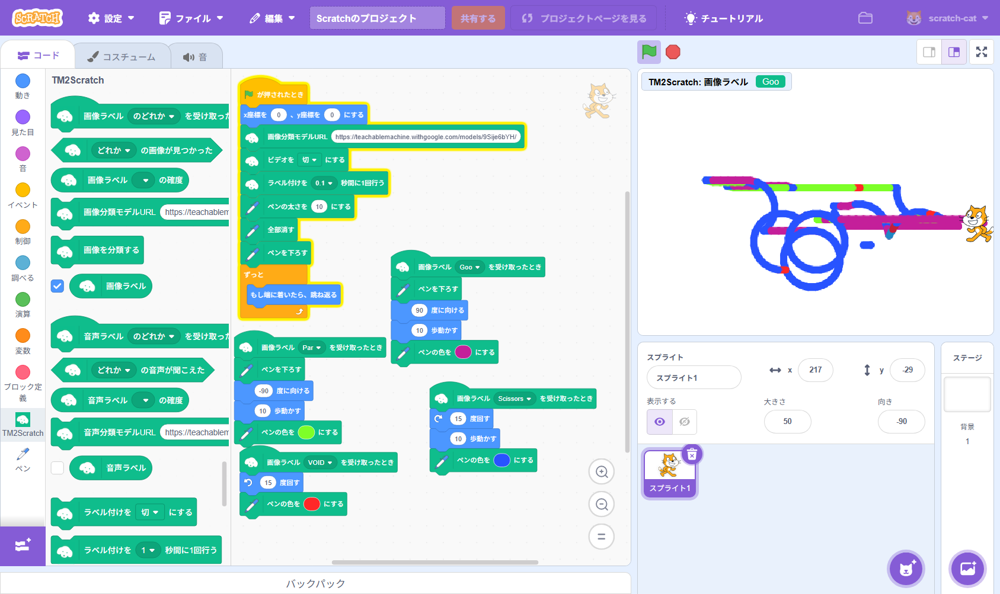
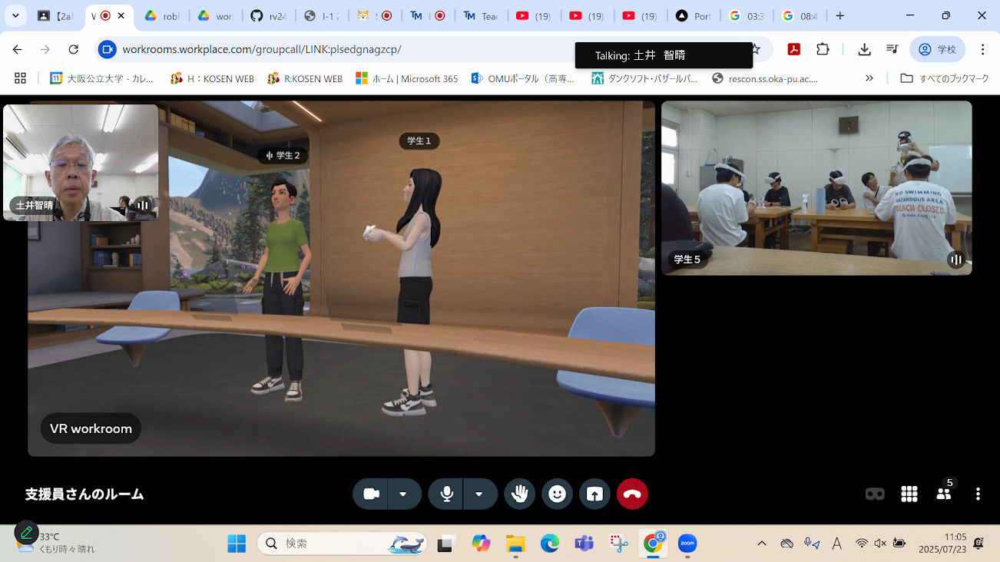
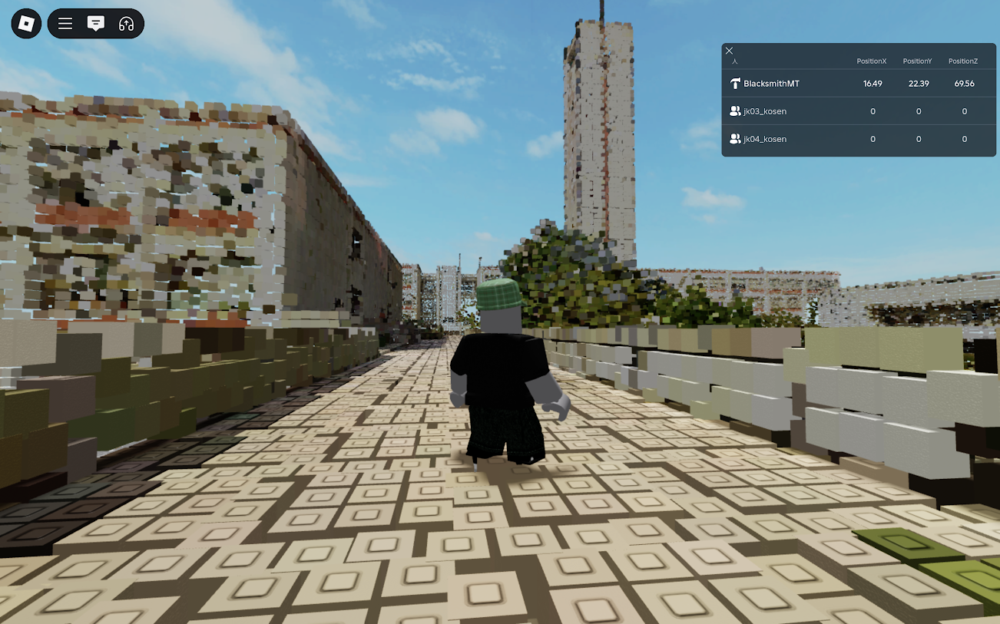

第2週目
2-1 2週目のレポートをHTMLで作る
1.内容
文字を書いたり＜br＞や画像などを活用してWEBサイトを作成し、
様々な改変を行いレポートとして提出できる状態にした。
2.感想
前回よりも楽しい内容が多くとても書きやすかった。
その上、全体的に他のコースの課題よりも書きやすかった。
3. 2週目が完成した人は1週目のレポートも完成させる
2-2 機械学習体験

1.内容
AIを作成した、画像認識によってグー・チョキ・パーを見分けられ
それをスクラッチのプログラムに使用し、絵をかけるようにした。
2.感想
自分で機械学習させたAIと一緒に様々なプログラムを作成するのが楽しかった
家でもAIのことを勉強していきたいと思った。
2-3 VR（バーチャルリアリティー：Virtual Reality）の体験
 
1.内容
VRゴーグルを被りmetaWRやrobloxを話したり動き回ったりして、
多人数で遊び、VRがどのようなものか学んだ。
2.感想
VRは聞いたことがあったが体験したことはなかったので
とても新鮮な体験だった。VRゴーグルが更に欲しくなった。